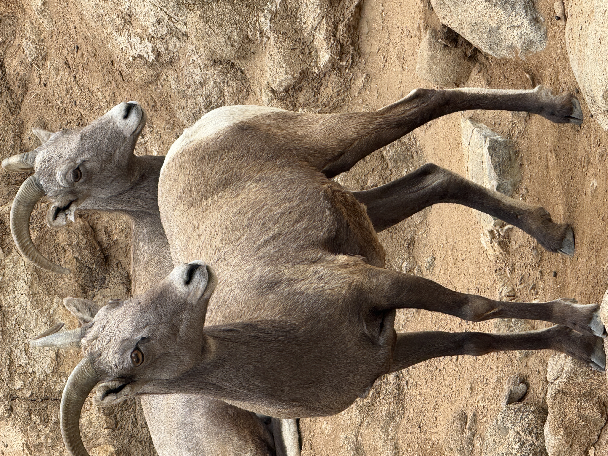
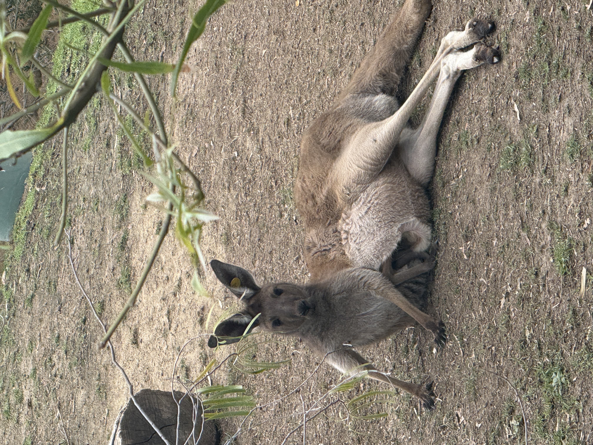
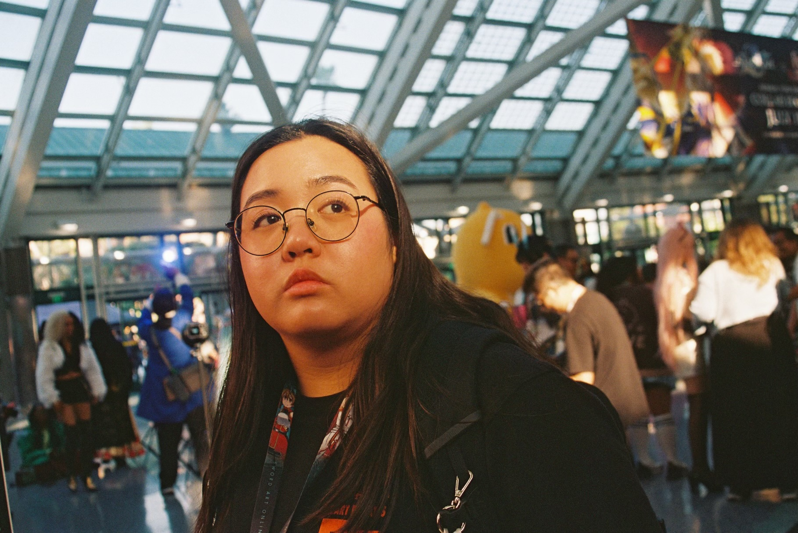

Hello, my name is Isabel Breton and I am currently taking WEBD168. I graduated with my bachelor's in Business from UC Irvine in 2024. I took the WEBD152 course last Spring and found the course very helpful.I had a lot of fun with the last course as it was my first time making a website so by the end of the course I felt I had learned a lot and was very proud of myself.

Going forward, I hope to further expand my knowledge of HTML and CSS. I am confident in my HTML skills but not at all confident in my CSS skills and struggled with this assignment because of that. I want to be more confident in my coding and website design skills so that I can start creating different websites on my own time and learn and grow from that. Prior to the WEBD152 course, I had no experience in website design and very little experience in graphic creation tools as I had only used photoshop a handful of times. I took a Python course during University but did not do very well and did not purse any additional coding until recently. Overall, the coding languages I have personally used are:
During my free time, I like to go to the San Diego Zoo or Safari Park and see all the animals. I also enjoy hearing the zookeepers talk about different animal facts. I also like to ice skate when I get the chance and worked at an ice arena during college where I also learned to drive a Zamboni. I also have been getting back into reading for leisure rather than for assignments and want to soon get into ceramics and pottery making.

